|
Indeks: |
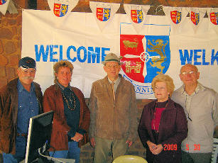
Op 30 Mei 2009 het daar weer 'n Genealogie- en Erfenisfees by die Voortrekkermonument in Pretoria plaasgevind. Soos gewoonlik, was die Henning Familiebond betrokke. Gideon Henning, voorsitter - en Olivier Henning, bondsekretaris van die Familiebond het van die Kaap af opgevlieg Pretoria toe om die Henning stalletjie te beman. Olivier se vrou, Charlotte het op eie koste saamgevlieg om hulle by te staan.
Ongelukkig het daar groot grondwerke plaasgevind in die omgewing van die saal waar die fees gehou is en weens die tyd van die jaar - koud en droog - was alles maar baie stowwerig en vaal. In die saal het dinge egter redelik vlot verloop, behalwe dat ons ietwat teleurgesteld was oor die min Hennings wat ons besoek het.
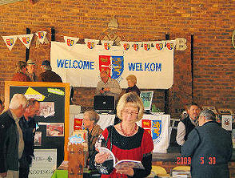
Omdat die Henning Familiebond in hierdie tyd sy 25-jarige bestaan wou vier, het ons gehoop dat baie meer Hennings daar sou saamtrek on te deel in die feesvieringe.
Die bestuur van die Familiebond beskou hierdie jaarlikse genealogie- en erfenisfees as van groot waarde, maar ons sal tog moet besin oor ons betrokkenheid. Dit is nie lonend om twee lede van die Kaap af op te vlieg Pretoria toe, as slegs enkele mense die geleentheid bywoon nie. Ons sal daaraan moet dink om plaaslike lede te gebruik om die Henning stalletjie te beman. Omdat baie mense spesifiek die fees bywoon om die bestuurslede van die Familiebond te ontmoet, kan dit tot gevolg hê dat nog minder lede bywoon. Daar sal ook 'n oplossing gevind moet word hoe ons al die uitstalitems veilig tussen die Kaap en Pretoria gaan vervoer.
Dit is egter duidelik dat daar nog baie dinkwerk ingesit sal moet word voor volgende jaar se fees.

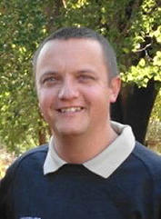
Die volgende beriggie het op 2 April 2009 in die Streekkoerant, Noord-Wes Beeld verskyn:
Klerksdorp. †29 Maart 2009 - Sy ouer broer, Pieter James Henning, wat 'n predikant in Australië is, het spesiaal huis toe gekom om die roudiens te lei.
Elaine Henning snik as sy vertel hoe haar man, James (37), Sondag "net wou kyk of hy nie dalk kon sien wat veroorsaak dat die buitegeboue se krag kort-kort afgaan nie".
"Alles was oral afgeskakel toe James in die dak klim. Hy is steeds geskok. Ek het noodhulp probeer toepas, maar dit was te laat," sê Elaine, wat haar man se byna lewelose liggaam bo in die dak gekry het. Elaine en familielede het die huis se dak oopgebreek om hom uit te haal. Hy het onderweg hospitaal toe gesterf.
"Waarsku mense, asseblief. Moenie self kyk wat fout is met elektrisiteit nie." Sy en James, 'n plaaslike blokman, was 17 jaar lank getroud. "Almal het hom geken. Hy het hard gelag - eintlik soos 'n hoenderhaan gekekkel. Hy was "loud" en vriendelik. 'n Fantastiese pa. Ons dogters kon almal teen die ouderdom van ses jaar al visvang. Hy het hulle geleer. So baie mense het hom geken,'' sê Elaine.
James is 'n gebore en getoë Klerksdorper wat sy skoolloopbaan aan die Milner High School voltooi het. "Hy was 'n uitstekende verkoopsman. Jy sou net maalvleis gaan koop het, dan het jy met 'n sak vol vleis by die slaghuis uitgestap. Hy was baie lief vir rugby en Province was sy span. Al het hulle hoe swak gespeel, het hy altyd sy trui met die wit-en-blou strepe gedra en selfs met hulle gespot."
Elaine, wat verkies dat haar dogters se name nie gepubliseer word nie, sê "as dit nie vir my kinders was nie, het ek agter 'n bossie gaan inkruip en doodgaan".
Met Noordwes-Beeld se besoek het besoekers ingestroom. Almal gereed met 'n drukkie en 'n woord van bemoediging. "Alles is deesdae duur en mense wil bespaar, maar betaal eerder 'n kundige wat opgelei is vir die taak,'' sê Elaine.
b7.c2.d3.e5.f2.g1.h3. James Michael Henning *21-7-1971 word oorleef deur sy vrou, Elaine Bronwyn (gebore Burger), vier dogters (8, 10, 13 en 15), sy ouers, 'n broer, suster en skoonma.

Onlangs ontvang ons die volgende E-Pos briefie uit Fiji:
Hello Olivier,
Bula from the Fiji Islands in the South Pacific. My name is Bryan Hennings and I'm just checking out your Henning web site. I am a 5th generation Hennings living in Fiji & my great/great grand father Fred William Hennings came to Fiji from Bremen Germany in the 1840's. Hoping to hear from you so we can trace our family connections. You might be my long lost cousin, ha! ha! Please reply.
Bryan Wallace Hennings
Ons het vir Bula geskryf. Ongelukkig het ons geen verdere inligting vir hom nie.

Die volgende beriggie het op 1 April 2009 in die Kontrei Volksblad verskyn:
Dorpsmuseum het al talle baadjies gedra
ALIWAL-NOORD - Die museum op die dorp word in twee pragtige, ou, geskiedkundige geboue gehuisves en pogings word nou aangewend om dié geboue as nasionale gedenkwaardigheid te laat verklaar.
Volgens mev. Madeleine Joubert, 'n vrywilliger wat al sedert die opening van die museum 22 jaar gelede daarby betrokke is, behoort albei geboue aan die Maletswai-munisipaliteit wat ook veronderstel is om dit te onderhou. Dié taak rus egter ook maar op die skouers van die vrywilligers.
Die Kerkplein-museum dateer uit 1864 toe dit as NG kerkgebou opgerig en aangewend is. Volgens Joubert, wat reeds sedert 1964 hier woon, was dié gebou al 'n danssaal, stoorplek en 'n mark.
"Ek het daar groot waatlemoene vir 50 sent gekoop!"
Die uitstallings in dié gebou fokus op die lewe op die dorp. 'n Straat, kompleet met outydse gaslampe (wat darem nou met elektrisiteit werk) en winkels word daar uitgebeeld. Die winkels op uitstalling sluit in 'n plaas-, fotografie-, klere- en musiekwinkel.
Die huise van die vroegste inwoners word ook verteenwoordig. So word die De Wets, die eerste familie wat hom hier gevestig het, se geskiedenis uitgebeeld. Die tweede familie wat hom hier gevestig het, die Jouberts, en familie van Joubert se man, se huis het afgebrand en daar het nie veel oorgebly om uit te stal nie. Die Hennings, die derde groep wat hom hier kom vestig het, se huis word ook uitgebeeld.
Verder is daar 'n volledige uitstalling van die Anglo-Boereoorlog en die konsentrasiekamp wat naby dié dorp was.
Die ou dorpsbiblioteek in Smithstraat is ontruim toe die nuwe biblioteek jare gelede in die hoofstraat gebou is. So het die ou biblioteek die Aliwal-museum geword met uitstallings oor onder meer die warmbronne.
Volgens Joubert is daar 'n seepuitstalling soos min en eksemplare van al die koerante wat op die dorp gedruk is, van die eerste een wat in 1879 verskyn het tot vandag, word hier bewaar. Sy doen ook dikwels familienavorsing vir mense en baie inligting kom dan uit dié koerante. Die navorsing en gebruikte boeke wat by die Aliwal-museum verkoop word, is van die min bronne van inkomste wat dié museum het. Verder het Joubert ook 'n kruietuin aangelê en verkoop sy van die plante om 'n inkomste te genereer. Toegang tot die museums is gratis, maar skenkings sal waardeer word.
Joubert, 'n opgeleide bibliotekaris, vertel sy het reeds in 1964 hierheen verhuis en aanvanklik in die streekbiblioteek gewerk. Ná haar troue het sy in die dorpsbiblioteek gaan werk totdat sy om gesondheidsredes moes uittree.
Mev Madeleine Joubert kan by 051-634-1910 gekontak word.

Ons was bewus dat b9.c1.d2.e5. Michiel Petrus Henning *24-12-1875 gedurende die Anglo Boere-oorlog aan Boerekant geveg het en dat hy 'n bittereinder was, wat tot aan die einde van die oorlog geveg het.
Ons het onlangs insae gehad in die soldyrekords van die Heidelberg Kommando, wat gedurende die oorlog gedien het. Volgens hierdie rekords was Michiel Petrus Henning 'n korporaal in die Heidelberg Kommando en in bevel van 'n afdeling bestaande uit 20 burgers, waarvan twee broers van hom was - sy broer, Johannes Jacobus (e4) *22-3-1874 en Pieter Hendrik (e1) *Feb 1870 wat self later in die oorlog 'n korporaal geword het.
Michiel se eerste vrou, Cornelia Magrieta Etresia Smit (gebore Pretorius) en hul eerste twee kinders is gedurende die oorlog in die Johannesburg Konsentrasiekamp aangehou, waar beide kinders gesterf het. Sy is later na die Heidelbergkamp oorgeplaas.
Vir die eerste paar jaar na die oorlog het Michiel Petrus en sy vrou op 'n klein stukkie grond by Blesboklaagte, naby Heidelberg geboer. Gedurende 1910 verhuis hulle na Vereeniging, waar hy by die nuutgeboude aanleg van die Unie Staalkorporasie begin werk het.
Maar terug na die ABO. Gedurende die vroeë gedeelte van die oorlog het die regerings van die twee Boere Republieke hulle bevelskader aangesê om die name van burgers wat hulle op die slagveld onderskei het, aan te teken en na hoër hoofkwartier deur te stuur. 'n Medalje of kruis sou na die beeindiging van die oorlog toegeken word. Aangesien die Boeremagte verslaan is, het die oorwinnaar, Brittanje, slegs dekorasies en medaljes aan sy eie soldate toegeken.
Meer as 18 jaar na die oorlog, in 1920, het die Unieregering 'n dekorasie vir offisiere, 'n medalje vir manskappe en 'n lint vir verwondings vir burgers van die Boere-republieke goedgekeur.
Die tragedie was egter dat burgers wat aan die vereistes voldoen het, self vir hierdie toekennings aansoek moes doen. Baie was toe reeds oorlede. Baie het gesneuwel. Baie het in verre lande, waar hulle krygsgevangenes was, begrawe gelê en baie het nooit eens van die toekennings verneem nie. Michiel Petrus Henning was een van diegene wat nooit vir sy medalje aansoek gedoen het nie. Lees gerus Hoofstuk 13 van die Henning Familiekroniek en in besonder die gedeelte wat handel oor Oorlogsmedaljes tydens die ABO.

Ons noem graag die name van lede wat oor die afgelope drie maande bydraes van R200.00 en meer aangestuur het:
Pieter Hendrik (Piet) Henning van Meyersdal. Alberton - R250.00
Jacobus Adriaan Gerhardus (Koos) Henning van Nylstroom - R200.00
Ellen Naude, gebore Henning, lewenslange lid van Wonderpark, Rosslynn - R200.00
Gesina Spangenberg van Swakopmund, Namibië - R200.00
Cornelius Belthaser (Neels) Henning van Tampa, Florida, VSA - R1000.00
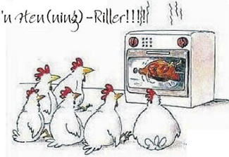
Daar is tans nog 22 gesinne wat nog geen bydrae vir 2009 gelewer het nie. Ons doen maar weer 'n beroep op almal om te probeer om elke jaar vir ons 'n donasie aan te stuur - u bepaal self hoe groot bydrae u wil maak. Elke sent wat ons ontvang, word in belang van die Henning familie aangewend. Dit is waarom die Henning Familiebond steeds as een van die besgeorganiseerde familiebonde in Suid-Afrika geag word.

Ons het kennis geneem van twee Henning huwelike vroeër in die jaar.
| 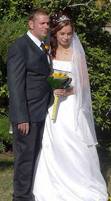 | 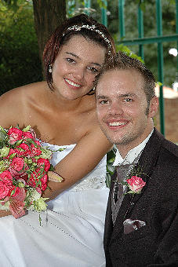 |
b6.c4.d1.e5.f3.g7.h5.i1. Willem Frederik Henning *10-2-1981 is op 11 April 2009 in Pretoria getroud met Charmaine Jacuelene Bezuidenhout *14-8-1980. Hy is die seun van Willem Frederik Henning *12-7-1952 en Margaret Elizabeth Josephine (gebore Breytenbach)
Dan het ons ook verneem van die huwelik van b6.c4.d2.e6.f3.g1.h3.i3. Benjamin Henning *8-4-1986 en sy bruid, Lezinda Hugo-Langerman *20-6-1985 op 14-2-2009.
Lezinda het vir ons laat weet dat sy en Bennie in 'n klein kerkie in Bronkhorstspruit getroud is op Valentynsdag 2009. Daar was net meer as 60 mense teenwoordig by die troue, wat dit klein en intiem gemaak het.
"Die boodskap was uit Hooglied gewees en het vertel hoe ek Bennie se lelie van die dale is en Bennie my appelboom in die bos. Die gaste het by hulle tafels gesit gedurende die seremonie en die onthaal het na die foto's in volle swang begin.
Dit was een van die mooiste dae wat ek ooit in my lewe gaan beleef!"

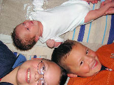
b7.c2.d15.e3.f7.g3. Marthinus Christoffel (Martin) Henning en Charlotte René (gebore Bergh) *21-7-1978 se derde seuntjie is op 4 Mei 2009 te Pretoria gebore. Sy naam: Ludick Henning
Hulle ander twee seuns se name is Martinus en Matthian

Ons het oor die afgelope tyd nuus uit twee oorde ontvang van Henning afstammelinge met ander vanne. Wat interessant is, is dat dit twee families is wat by dieselfde punt in die Henning geslagsregister uitkom, nl b7.c8. Olivier Johannes Gerhardus Cornelis Henning *1-12-1834.
In die eerste geval raak dit 'n nasaat van Olivier Henning se oudste dogter, b7.c8.d1. Martha Johanna Elizabeth Henning *26-8-1857.
| 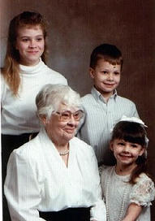 | 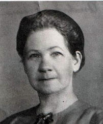 |
Ds Bjarne Fowels van Hjelme-land, Noorweë ('n Henning afstammeling en lid van die Familiebond) het vir ons laat weet dat Edith Amelia Foreman, gebore te Lady Grey (naby Aliwal-Noord) op 24 Maart 1909 op 5 Maart 2009 te Elmira, New York, VSA oorlede is - slegs 'n paar dae kort van haar 100 ste verjaardag. Sy was die dogter van Hanry Clifton Foreman *Thingie, Engeland 1858 en sy vrou Amelia (gebore Zurich) *Lady Grey 31-10-1881. Amelia Zurich was 'n dogter van Herman Zurich en sy vrou Martha Henning (b7.c8.d1.)
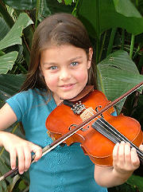
Die tweede mededeling wat ons ontvang het t.o.v. 'n nasaat van b7.c8. Olivier Henning *1-12-1834 se dogters, kom van mev Elizabeth van Oudtshoorn, 'n kleindogter van b7.c8.d11. Annie Isabella Fuller (gebore Henning) *23-1-1877. Elizabeth is so trots op haar Henning voorsate dat sy self jare gelede reeds 'n lid van die familiebond geword het. Sy het vir ons laat weet dat haar kleindogter, Roxanne van Oudtshoorn (7 jaar) van Pinetown, verkies is om op te tree by die Kwa-Zulu Natal Jongmusikante Konsert op 9 Mei 2009 waar sy een van Vivaldi se konserte saam met die Natal Filharmoniese orkes opgevoer het.
Roxanne het haar loopbaan as violis gedurende 2006 as 'n 4-jarige dogtertjie begin, toe sy lesse by haar ouma (Elizabeth) wat 'n viool onderwyseres is, begin kry het. Die afgelope jaar was sy 'n toegewyde leerder van Maestro Vincenso lo Castro.
Roxy is reeds genooi om as gaskunstenaar op te tree by verskeie konserte by kerke, skole en troues. Sy is ook genooi om as 'n voorspel musikus op te tree by die elite "Friends of Music Concert" wat in Januarie 2009 by die Joodse Klub opgevoer is, asook om op 30 Augustus saam met die Kaapse Filharmoniese Orkes by die Hugo Lamprecht teater in Stellenbosch op te tree. Gedurende die September skoolvakansie gaan sy ook aan die Sanlam kompetisie by die Hugo Lamprechts teater deelneem.
Ai! Enige ouma se hart sal swel van trots met so 'n kleindogter.

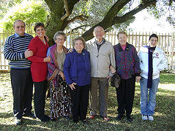
b7.c8.d8.e1.f1. Johanna Delport (gebore Henning) *30-6-1929 het hierdie jaar 80-jaar oud geword. Haar kinders het vir haar 'n baie lekker verrassingspartytjie op Saterdag 27 Junie by die die Brakpan Hotelskool, skuins oorkant haar huis, gehou. Haar enigste oorlewende broer en suster, wat albei in die Kaap woon, het spesiaal vir die partytjie opgevlieg.
'n Paar van die familielede wat die 80ste verjaardagpartytjie van b7.c8.d8.e1.f1. Johanna Delport (gebore Henning) bygewoon het. V.l.n.r. Stanley Henning (S/v Johanna se broer, Olivier) en sy vrou Mary-Ann van Wierdapark, Centurion; Johanna se jongste suster, Dientjie de Bruyn van Kaapstad; Johanna en haar broer, Gideon, met sy vrou Wena, van Strand en heel regs is Gideon se kleindogter, Tamsyn, D/v Stanley.